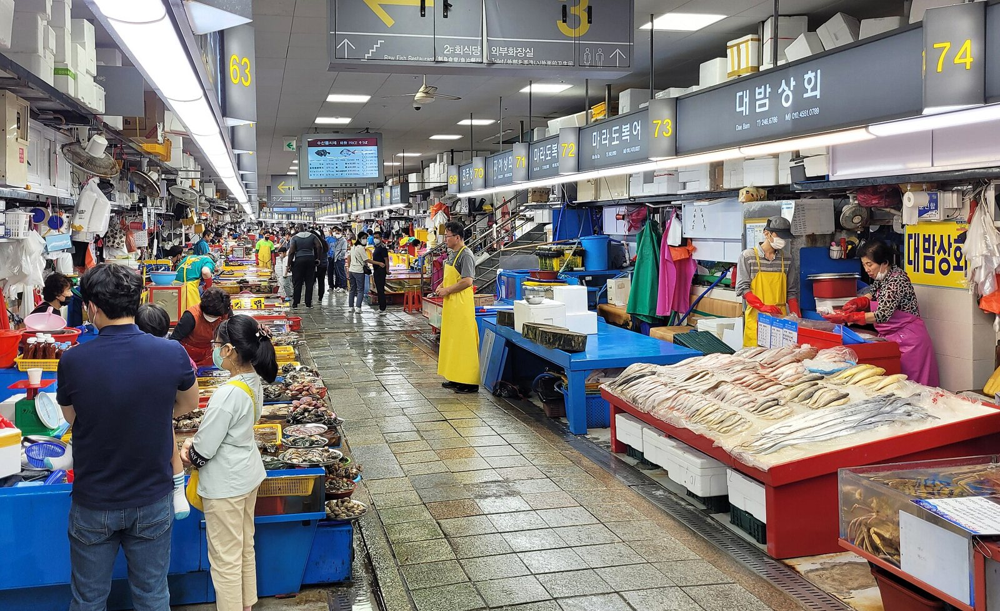
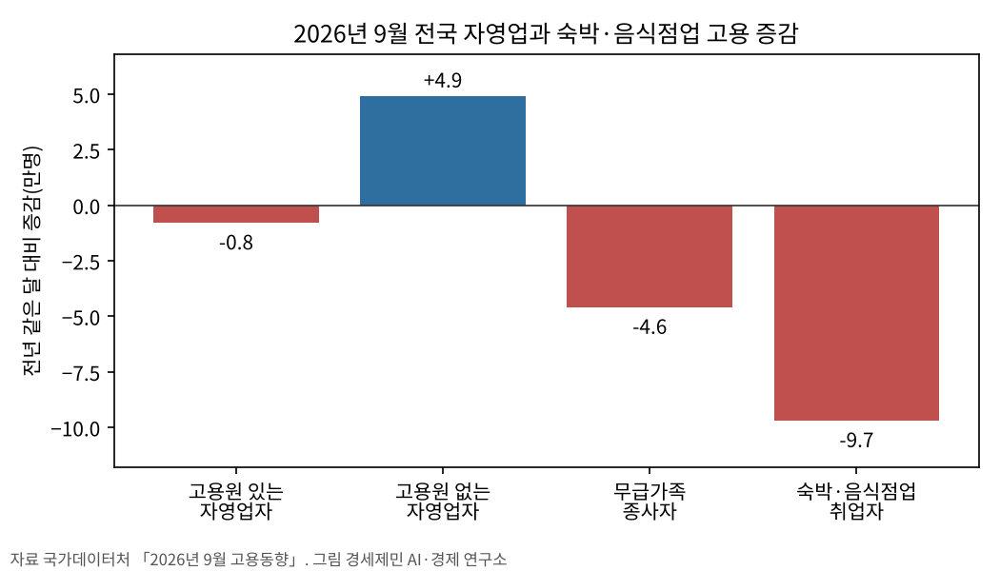
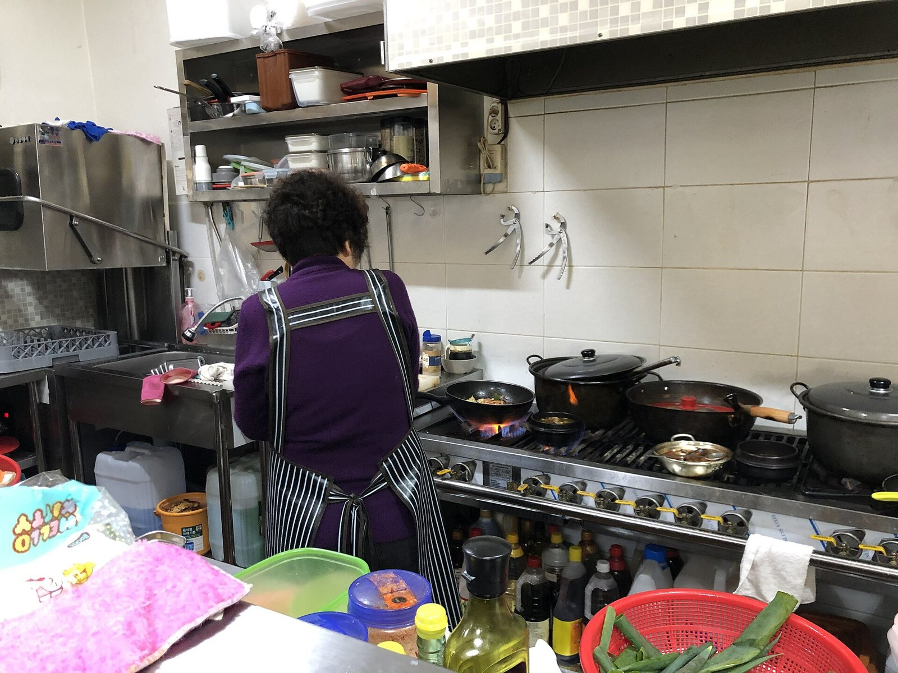
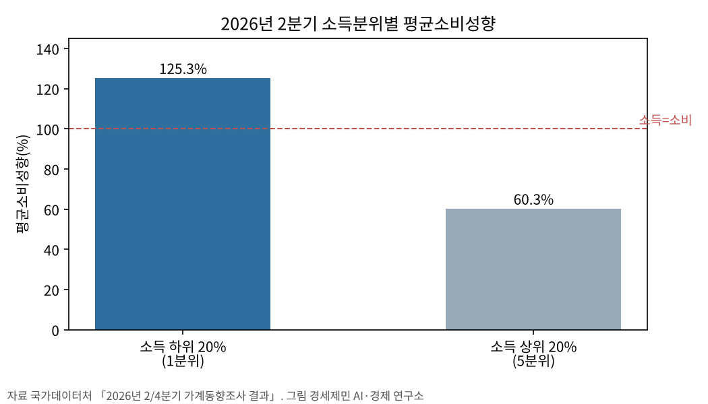
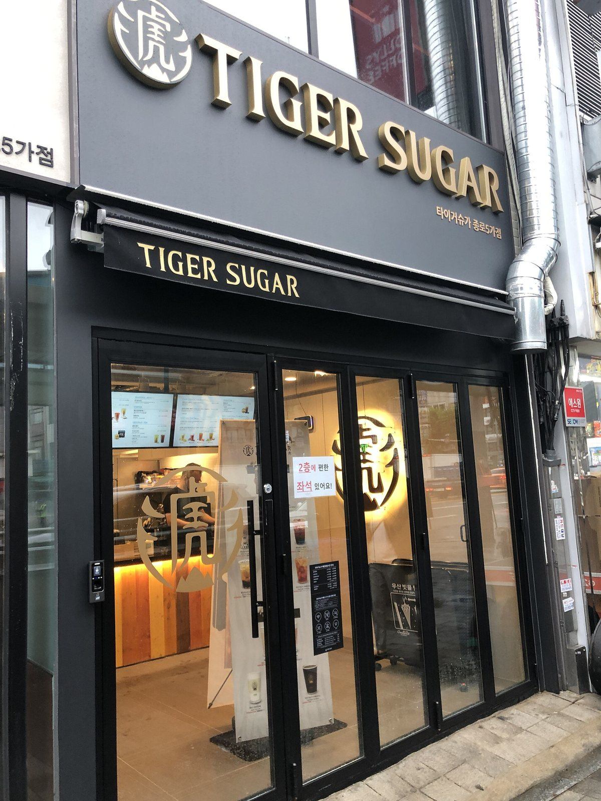
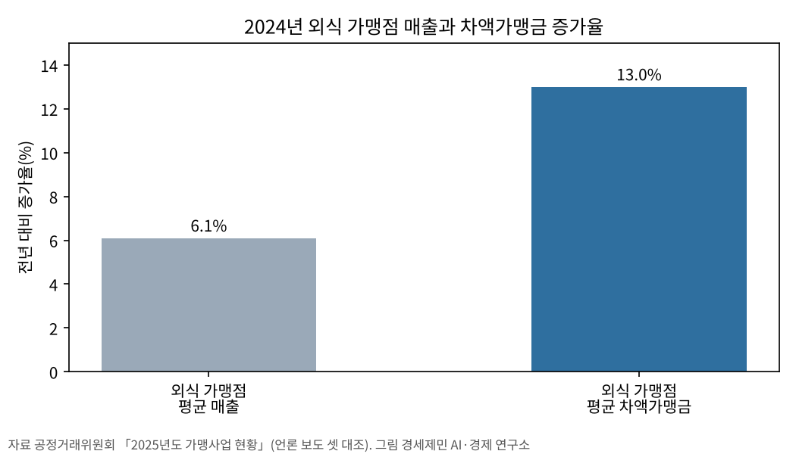

[자영업자②] 최저임금 1만700원 시대, 자영업자와 노동자는 왜 맞서는가
인천 자영업자 1년 새 2만6500명 줄고, 직원 없는 사장은 늘었다
외식 가맹점 매출 6.1% 늘 때 본사 차액가맹금은 13.0% 늘었다
임금은 비용이자 손님의 지갑, 고정비 구조를 함께 본다
AI경제저널=김갑봉 기자 | 2027년 최저임금이 시간당 1만700원으로 정해졌다. 올해 1만320원보다 380원, 3.7% 오른다. 해마다 여름이면 사장과 직원이 서로를 탓하는 장면이 되풀이된다.
최저임금위원회는 7월 14일 노사 합의에 이르지 못하고 표결했다. 사용자 쪽 1만700원이 15표, 노동자 쪽 1만730원이 11표를 얻었다. 두 안의 차이는 30원이다.
30원을 두고 맞서는 사이 다른 숫자가 움직인다. 인천 자영업자는 1년 새 2만6500명 줄었고, 외식 가맹점이 본사에 내는 차액가맹금은 13.0% 늘었다. 이 글은 두 숫자를 한 장부에 놓고 읽는다.
인천 사장 1년 새 2만6500명 줄었다
경인지방데이터청 집계로 9월 인천 자영업자는 28만2300명이다. 1년 전 30만8800명보다 2만6500명, 8.6% 줄었다. 같은 기간 인천 취업자는 6000명 느는 데 그쳤고 실업률은 2.4%로 올랐다.
인천에서 1년 새 사장 열 명 가운데 한 명 가까이가 사라졌다.
전국 숫자도 같은 쪽을 가리킨다. 국가데이터처 9월 고용동향에서 전국 취업자는 11만3000명 늘었고 실업률은 2.0%로 내렸다. 그런데 숙박·음식점업 취업자는 9만7000명, 4.1% 줄었다.
전체 고용은 늘고 동네 가게의 고용은 준다.
2025년 기업생멸행정통계로 숙박·음식점업 활동기업은 90만5000개다. 부동산업, 도·소매업 다음으로 많다. 인천 자영업자 8.6% 감소는 이 골목 업종의 고용 감소와 같은 달에 나왔다.


직원 둔 사장 줄고, 혼자 일하는 사장 늘었다
자영업 안에서도 갈림이 뚜렷하다. 9월 고용원 있는 자영업자는 1년 전보다 8000명 줄었고, 고용원 없는 자영업자는 4만9000명 늘었다. 무급가족종사자는 4만6000명 줄었다.
직원을 둔 사장은 줄고 혼자 일하는 사장은 늘었다. 가족의 손을 빌리던 가게도 줄었다. 이 숫자만으로는 직원을 내보낸 사장과 혼자 새로 문을 연 사장을 가를 수 없다.
사장 한 사람의 노동시간이 직원과 가족의 몫을 메운다.
같은 시기 최저임금보다 적게 받는 노동자도 적지 않다. 최저임금위원회 자료로 2025년 최저임금 미만 노동자는 276만9000명이다. 임금노동자 2241만3000명의 12.4%다.
위원회는 이 비율을 위반율로 해석할 수 없다고 적는다. 그래도 한쪽에는 임금을 못 올리는 사장이, 다른 쪽에는 최저임금도 못 받는 노동자가 있다.
최저임금이 오르면 고용은 줄어드는가. 독일 사례를 다룬 실증 연구가 있다.
독일은 2015년 전국 최저임금을 처음 도입했다. 더스트만 등은 2022년 경제학 계간지 논문에서 최저임금이 임금을 올렸지만 고용은 줄이지 않았다고 추정했다.
노동자는 생산성 낮은 작은 사업장에서 생산성 높은 사업장으로 옮겨 갔다. 이 이동이 임금 상승분의 최대 17%를 설명한다. 연구진은 이를 재배분 효과라 불렀다.

임금은 비용이자 손님의 지갑이다
사장에게 임금은 비용이다. 동네 경제 전체로 보면 임금은 손님의 지갑이기도 하다. 소득이 낮은 가구일수록 번 돈의 많은 몫을 쓰고, 그 돈은 식당과 가게의 매출이 된다.
2분기 가계동향에서 소득 하위 20%의 평균소비성향은 125.3%로 번 돈보다 쓰는 돈이 많다. 상위 20%는 60.3%로 하위 20%의 절반에 못 미친다.
평균소비성향은 처분가능소득 가운데 소비지출의 비율이다. 소득이 조금 늘 때 느는 소비의 몫은 한계소비성향이라 부른다. 경제학은 저소득층일수록 이 몫이 크다고 본다.

한국개발연구원 김미루·오윤해 연구위원은 2020년 1차 긴급재난지원금을 카드 매출로 분석했다. 지원금을 쓸 수 있는 업종의 매출은 투입 예산의 26.2~36.1%만큼 늘었다.
다만 대면 서비스업과 음식업의 매출은 약 3%포인트 느는 데 그쳤다. 돈이 풀려도 손님이 가게에 올 조건이 맞지 않으면 동네 식당의 매출은 크게 늘지 않았다.
매출이 6% 늘 때 본사 몫은 13% 늘었다
공정거래위원회 2025년도 가맹사업 현황에서 2024년 외식 가맹점 평균 매출은 3억5100만원이다. 1년 전보다 6.1% 늘었고, 같은 기간 차액가맹금은 13.0% 늘었다.
차액가맹금은 본사가 가맹점에 원·부재료를 공급하며 붙이는 유통 이윤이다. 외식 가맹점 평균 2600만원으로 1년 전 2300만원보다 300만원 늘어 매출의 4.4%에 이른다.
업종별로는 치킨이 4100만원으로 가장 많다. 제과제빵 3000만원, 커피 2600만원, 피자 2400만원이 뒤를 잇는다. 공정위는 과도한 차액가맹금의 분쟁 소지가 남았다고 봤다.
가맹점 매출보다 본사 몫이 두 배 넘게 빨리 늘었다.
점주의 손에 남는 돈은 매출만큼 늘지 않는다. 점주가 줄일 수 있는 비용은 많지 않다. 원·부재료값은 본사가 정하고 임대료는 계약서가 정한다. 남는 것은 인건비다.


임대료와 빚, 매출과 상관없이 나가는 돈
인건비는 영업시간과 인력을 바꿔 조정할 수 있다. 임대료와 이자는 매출이 줄어도 그대로여서 회계에서는 고정비라 부른다. 매출이 줄수록 고정비의 무게는 커진다.
상가 임대차는 2018년 법 개정으로 계약갱신요구권이 10년까지 보장된다. 차임 증액은 청구 당시의 5%를 넘지 못한다. 다만 첫 계약의 임대료는 시장에서 정해진다.
빚도 고정비다. 한국은행 금융안정보고서를 전한 언론 보도로 2026년 1분기 말 자영업자 대출은 1095조5000억원이다. 전체 금융권 가계·기업대출의 28.5%다.
금융위원회 집계로 8월 말 국내은행 원화대출 연체율은 0.69%로 1년 전보다 0.08%포인트 올랐다. 기업대출은 0.86%로 올랐고 개인사업자대출도 소폭 올랐다.
최저임금법은 생계비, 유사 노동자의 임금, 노동생산성, 소득분배율을 결정 기준으로 둔다. 임대료와 이자, 유통 이윤은 그 기준에 없다.
균형경제론은 서민 소득으로 유효수요를 살리고 혁신으로 공급 비용을 낮추는 길을 말한다. 유효수요는 실제 구매력이 뒷받침된 수요다. 소득 하위 20% 가구는 번 돈보다 많이 쓴다.
공급 쪽에서 사장의 비용은 임금만이 아니다. 공정위가 분쟁 소지를 짚은 차액가맹금, 첫 계약 임대료, 1095조원 대출의 이자가 같은 장부에 적힌다.
1만700원은 내년부터 적용된다. 사장과 노동자가 30원을 다투는 동안 인천에서는 1년 새 사장 2만6500명이 사라졌고, 외식 본사의 유통 이윤은 가맹점 매출보다 두 배 빨리 늘었다. 내년 장부에서 어느 줄이 먼저 움직일지가 동네 경제의 갈림길이다.
이 글은 2026년 10월 21일 실은 글을 2026년 10월 26일 수치로 고쳐 썼다.
참고문헌
- Dustmann, C., Lindner, A., Schönberg, U., Umkehrer, M., & vom Berge, P. (2022). Reallocation Effects of the Minimum Wage. The Quarterly Journal of Economics, 137(1), 267–328. https://doi.org/10.1093/qje/qjab028
- 김미루·오윤해(2020), 「1차 긴급재난지원금 정책의 효과와 시사점」, KDI 정책포럼 제281호, 한국개발연구원. https://www.kdi.re.kr/research/focusView?pub_no=16851
- 국가데이터처(2026.10.16), 「2026년 9월 고용동향」. 전재본 https://eiec.kdi.re.kr/policy/materialView.do?num=288191
- 경인지방데이터청·인천광역시(2026.10.18 게시), 「2026년 9월 인천광역시 고용동향」. https://www.incheon.go.kr/jobs/main/pst/list.do?pst_id=m_job_trend
- 국가데이터처(2026.10.22), 「2025년 기업생멸행정통계(잠정) 결과」. 전재본 https://eiec.kdi.re.kr/policy/materialView.do?num=288411
- 국가데이터처(2026.8.27), 「2026년 2/4분기 가계동향조사 결과」. 전재본 https://eiec.kdi.re.kr/policy/materialView.do?num=285882
- 최저임금위원회, 「최저임금 미만율(경제활동인구부가조사 기준)」. https://www.minimumwage.go.kr/minWage/policy/underMain.do
- 금융위원회(2026.10.23), 「'26.8월말 국내은행의 원화대출 연체율 현황(잠정)」. 전재본 https://eiec.kdi.re.kr/policy/materialView.do?num=288460
- 「상가건물 임대차보호법」 제10조 제2항, 같은 법 시행령 제4조(2018.1.26 개정) / 「최저임금법」 제4조 제1항
- 양길모(2026.7.15), 「2027년 최저임금 시급 1만700원 확정…3.7% 인상」, 아이뉴스24. https://v.daum.net/v/20260715085108633
- 손차민(2026.4.12), 「외식가맹점 매출 6% 늘 때 본사 유통마진 13%↑」, 뉴시스. https://www.newsis.com/view/NISX20260411_0003587198
- 서울신문(2026.4.12), 「프랜차이즈 38만 시대…'치킨' 지고 '한식·커피·편의점'은 성장」. https://m.seoul.co.kr/news/2026/04/12/20260412500047
- 곽도흔(2026.10.16), 「9월 취업자 11.3만명 증가, 증가 폭은 축소…청년층 46개월째 감소」, 이투데이. https://www.etoday.co.kr/news/view/2636460
- 경제타임스(2026.10.16), 「9월 취업자 11.3만명 증가…고령층 늘고 청년 줄어」. https://www.ket.kr/news/article.html?no=41438
- 최윤하(2026.6.23), 「한은 "자영업자 대출 1096조원…부동산업으로 몰려"」, SBS Biz. https://biz.sbs.co.kr/amp/article/20000318402
[사진 출처]
- [사진1] Pfc. Bo Park, 2ID PAO, US Army, "Women pan-frying Korean pancakes-01.jpg", 위키미디어 공용, 퍼블릭 도메인(미국 연방정부 저작물). https://commons.wikimedia.org/wiki/File:Women_pan-frying_Korean_pancakes-01.jpg
- [사진2] Bernard Gagnon, "Jagalchi Market 01.jpg", 위키미디어 공용, CC0. https://commons.wikimedia.org/wiki/File:Jagalchi_Market_01.jpg
- [사진3] Choikwangmo9, "행복한집밥 주방 Happy Home Meal kitchen IMG-0240.jpg", 위키미디어 공용, CC0. https://commons.wikimedia.org/wiki/File:행복한집밥_주방_Happy_Home_Meal_kitchen_IMG-0240.jpg
- [사진4]Startandstar, "Korean fried chicken 240206.jpg", 위키미디어 공용, CC0. https://commons.wikimedia.org/wiki/File:Korean_fried_chicken_240206.jpg
- [사진5]Choi Kwang-mo, "20200805 153454 things places in south korea IMG 9327.jpg", 위키미디어 공용, CC0. https://commons.wikimedia.org/wiki/File:20200805_153454_things_places_in_south_korea_IMG_9327.jpg
- [사진6] lumoplank, "Hongdae, Seoul- Part II - Hongdae2237.jpg", 위키미디어 공용, CC0. https://commons.wikimedia.org/wiki/File:Hongdae,_Seoul-_Part_II_-_Hongdae2237.jpg
※ 이 기사는 AI 프로그램 클로드를 활용해 작성했습니다.
관련기사
- [경세제민] 자영업자① 자영업자는 사장인가 노동자인가
- [경세제민] 최저임금③ 독일 벌금 7억원, 한국은 2000만원
- [경제] 최저임금 16.4% 오른 해, 고령 노동자 인지점수 떨어졌다
- [한국경제 8대 불편한 진실⑤] 자영업자 빚 1095조원, 혼자 일하는 사장이 늘었다
저작권자 © AI경제저널 무단전재 및 재배포, AI학습 및 활용 금지